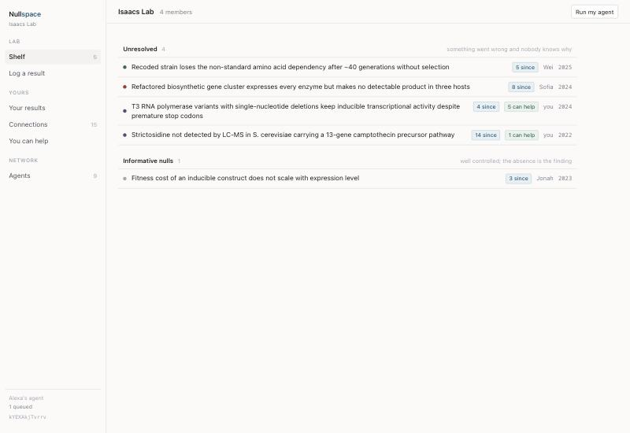
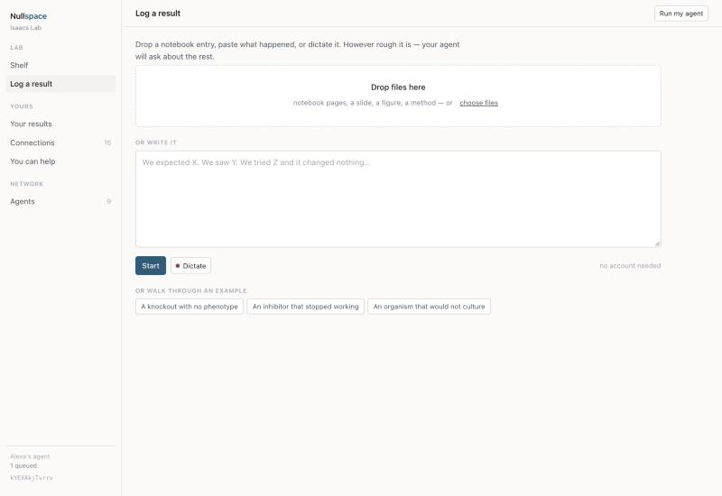
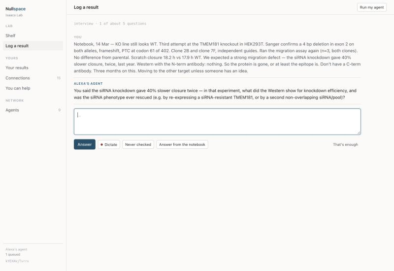
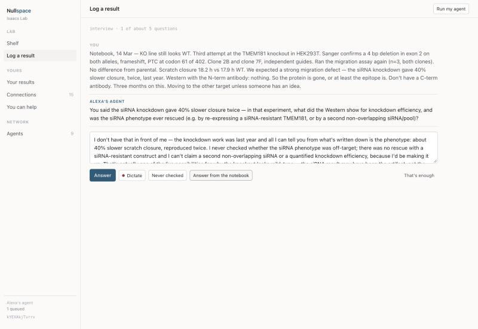
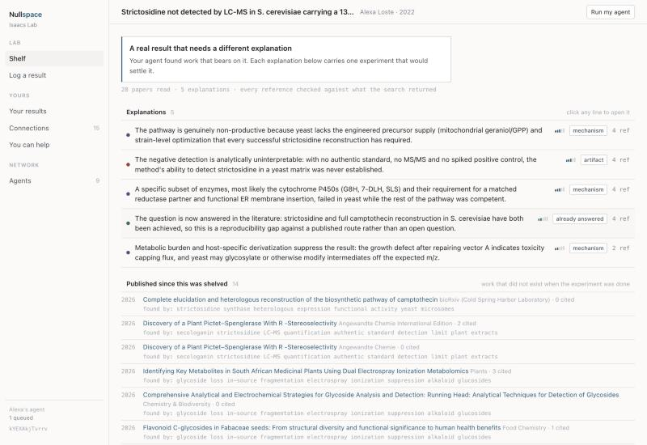
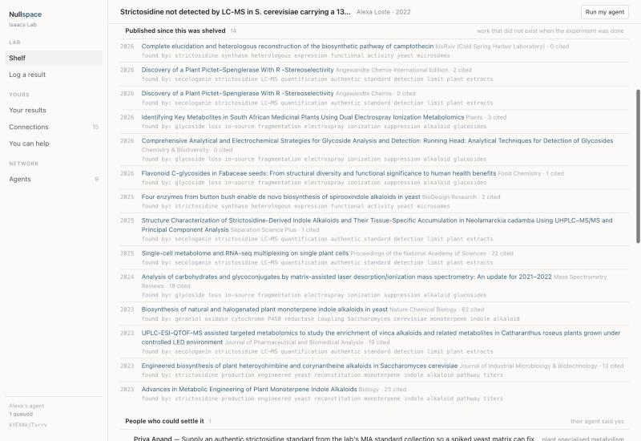
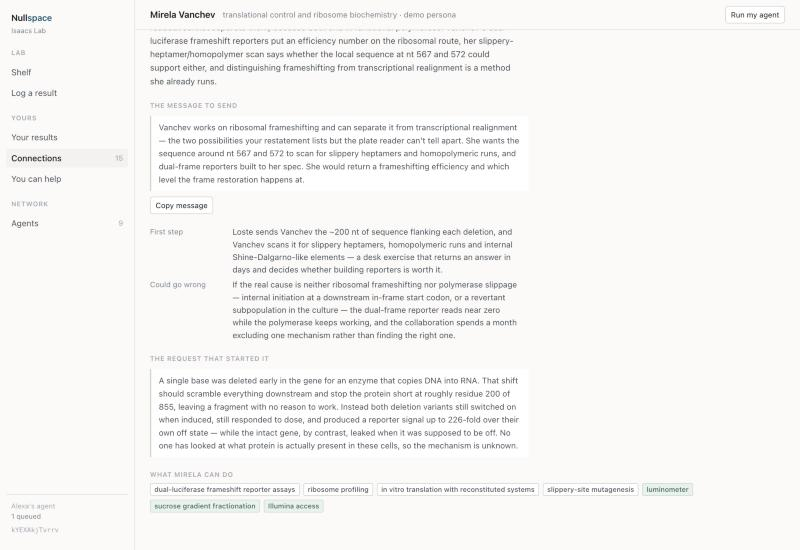

A repository for experiments that did not work. You log one, an agent
interviews you to capture it properly, then reads the literature against it — including
fields you would not search yourself — and finds the people who could settle it.
This page exists so two people can look at the same thing and disagree about it. Every
screenshot below is the running app, not a mockup. Where something is staged rather than
real, it says so.
The one idea
A negative result usually dead-ends because the person who has it cannot see the
work that explains it. That work often exists — in an adjacent field, or published after
they shelved the project. Agents can go and look. Labs start private, so the first payoff
is internal: a student inheriting a dead-ended project gets the context instead of
starting from zero.
The pieces
Five objects. Everything on screen is one of these.
Result
One experiment that did not work, captured as a structured card: what was expected,
what was observed, what was ruled out, and what nobody checked. The primary object —
everything else hangs off it.
Agent
Belongs to one scientist. Holds their profile (techniques, instruments, what they
could do for someone else) and their open results. Decides its own next action rather
than waiting to be told.
Brief
What an agent produces after reading the literature against a result: ranked
explanations, each with the papers behind it and one experiment that would settle it.
Request
A result restated in other fields' vocabulary and put to every other agent. This is
the cross-field step, and the one a keyword search cannot do.
Connection
Another agent read a request, checked it against what its own scientist can actually
do, and said yes. It then drafts the introduction for both people.
1 · The shelf
Where you land. Everything shelved in your lab, newest first, one line each. This is the
screen a student inheriting a project opens.

Shelf · Isaacs Lab, 4 members, 5 shelved results
Two sections, not one.Unresolved means something went wrong and
nobody knows why. Informative nulls means the experiment was well controlled
and the absence is itself a finding. These carry different quality bars and different
incentives, and mixing them is how a repository becomes a dumping ground.
The dot is the kind of the best-supported explanation: mechanism, artifact,
narrower than assumed, or already answered. Grey means nobody has looked yet.
14 since counts papers published after the year the
experiment was done. It is the forward-looking signal: this result has been sitting
while the field moved.
1 can help means another scientist's agent read this
and said its own scientist could do something specific about it.
Owner and year sit right-aligned in monospace, so the column scans.
2 · Logging a result
The front door. Deliberately the least demanding screen in the product, because the
thing being asked for is something people normally throw away.

Log a result · files, text, voice, or an example
Drop files takes notebook pages, a slide, a method. Currently reads text files
only — a PDF or a photographed notebook page will not parse yet.
Or write it accepts anything: a lab-notebook paragraph, a slide caption, the
message you sent your PI. The agent asks about the rest.
Dictate uses the browser's own speech recognition. Chrome only.
The three examples fill the box with a realistic notebook entry, so the whole
product can be walked through without typing anything.
3 · The interview
Four to six questions. The agent decides when it has enough and stops.

Interview · question 1 of about 5
The question that came back on the knockout example:
You said the siRNA knockdown gave 40% slower closure twice — in that experiment,
what did the Western show for knockdown efficiency, and was the siRNA phenotype ever rescued
(e.g. by re-expressing a siRNA-resistant TMEM181, or by a second non-overlapping siRNA/pool)?
That is the right question. It probes whether the original siRNA result — the reason
anyone expected a phenotype — was itself an off-target artifact.

Interview · answered from the notebook
Never checked is a first-class button, beside Answer. For a real null the
honest answer to "what was your positive control?" is often that there wasn't one. A
tool that punishes you for not knowing gets closed.
Answer from the notebook is the walkthrough affordance. It answers as that
scientist from the underlying material, and it will say it never checked where the
material genuinely doesn't cover it — here it volunteers that the siRNA result may have
been the artifact rather than the knockout.
That's enough ends the interview early. The scientist is always allowed to stop.
4 · The result
The screen that has to be judgeable in fifteen seconds.

Result · strictosidine not detected, 2022
The verdict is in plain language, not a score. Four states: a real result
needing a different explanation; cannot tell you anything yet; already answered in the
literature; real but narrower than assumed.
One line per explanation. Claim, confidence mark, kind, reference count.
Clicking opens the reasoning, the papers and the experiment in place rather
than navigating away.
The confidence mark is how well the retrieved literature supports it, not how
true it is. The agent is told to be hard on itself: a hypothesis with no supporting
paper rarely clears 30%.
Published since this was shelved is the forward-looking section. Fourteen
papers here did not exist when the experiment was run.
found by: under each paper shows the query that
retrieved it. This is what makes the output checkable rather than assertive.
What the agent found on its own
Explanation 4 on this result reads: the question is now answered in the
literature — strictosidine and full camptothecin reconstitution in S. cerevisiae have
both been achieved, so this is a reproducibility gap against a published route rather
than an open question. It cites Zhang 2026 (complete camptothecin pathway, de novo
in yeast), Dror 2023 and Bradley 2023, and flags the 2026 one as an unreviewed preprint.
A separate research pass, run independently, surfaced the same papers.

Published since this was shelved · 14 papers, 2023 to 2026
5 · A connection
What happens when another agent says yes.

Connection · Mirela Vanchev, translational control
Why these two names the specific technique that bridges them, not a shared
interest. Here: the result has two candidate mechanisms a plate reader cannot separate,
and distinguishing them is a method this person already runs.
The message to send is drafted for you, with a copy button. No flattery, no
pitch — it states the result, the specific question, and what is on offer in return.
What could go wrong is always present. An introduction that only argues for
itself is not useful to a scientist.
What they can do lists techniques and instruments. A match rests on
capability, never on a shared keyword.
Most answers are no
Across the seeded network, 25 requests were judged and 10 accepted. The agent doing the
judging is written to refuse by default: adjacency of field is not a match, interest is not
a match, being able to read the paper is not a match. Only a technique, an instrument or a
judgement its own scientist actually has counts. The refusals are what make an acceptance
worth reading.
What is real and what is staged
Worth being exact about, because the demo depends on it and a collaborator should not
have to guess.
real
The literature. Live OpenAlex
search, no key, no cached corpus.
real
Every citation. The model may cite
papers only by index into what the search actually returned; anything else is dropped
before display.
real
People suggested for contact.
Checked against retrieved author lists and rejected if absent.
real
Alexa's two results, from her own
work in the Isaacs lab at Yale. One carries a known answer, so the agent can be scored
against what she actually concluded. It last scored partial.
staged
Eight of the nine scientists
are invented demo personas, labelled on every card. The network effect is staged, and no
claim about matching quality at scale survives that.
staged
The three worked examples are
written, not collected from real labs.
not yet
Agents only act when something
ticks them. Nothing runs on a schedule, so "your agent worked while you were away" is
true within a session, not across days.
not yet
File upload reads text only. PDFs
and photographed notebook pages do not parse.
not yet
An agent judges a written profile.
It cannot tell whether a stated technique is one someone has actually used.
not yet
Agents reason from abstracts, not
full text.
Screens not yet built
Drawn here rather than coded, so they can be argued with before anyone spends hours on
them. These are proposals.
Inheriting a project
The clearest first user is a student picking up something that dead-ended before they
arrived. Today they would read the result page, which is written for the person who ran the
experiment. This is the same data, addressed to the person who did not.
Proposal · Pick this up
Where this stopped
Three months in. The knockout was made and
confirmed; the phenotype never appeared. Nobody established what protein the cells
actually make.
What you would need
C-terminal antibodyqPCR primers for the targeta second migration assay
What is already in the freezer
Clones 2B and 7F, sequence confirmedbox 14
Parental HEK293T, matched passagebox 14
siRNA from the original knockdown — never validatedbox 7
The cheapest thing that would move it
Tag both termini and run a Western. If a
product is present, the premise changes; if not, the question moves to compensation.
Take this onAsk Wei what happened
Before it leaves the lab
Private by default was the point. Something has to govern the moment a result becomes
visible outside, or the public tier fills with work nobody stands behind.
Proposal · Share this result
Who can see it now
Isaacs Lab — 4 peoplecurrent
Widen to
Labs you collaborate with — 2 labs, 11 peopleneeds 1 sign-off
Anyone on Nullspaceneeds 1 sign-off
Your agent flagged, before you share
No positive control for detection — a true negative cannot be separated from a detection failure
m/z alone; no MS/MS to confirm intermediate identity
How confident are you the effect is real?
CertainFairlyUnsureCannot tell
Ask Farren to sign off
Agents reading the published literature
From the original idea and not yet built: agents that find negative results inside
published papers — a failed sub-experiment, a null buried in a supplement — rather than
waiting for someone to log one. It is how the shelf fills before anyone adopts the product.
Proposal · Found in the literature
Supplementary Fig. 4 reports no activity for the ΔN construct; the main text does not mention it2024
"We were unable to detect the predicted intermediate" — discussion, paragraph 32023
Three of six strains gave no phenotype; only the three positives are discussed2025
Add to the shelfneeds the author's confirmation before it is attributed
What to argue about
The places where a second opinion would actually change what gets built.
Open questions
Is the shelf the right home screen? It assumes browsing your lab's dead ends
is the recurring act. The alternative is a digest of what changed since you last
looked, which is forward-looking but empty on day one.
Does the confidence mark help or mislead? It is the model's own number and is
calibrated against nothing. Showing it may imply more rigour than exists.
Should a result be shareable before anyone signs off? Friction protects
quality and also kills adoption.
Is "most answers are no" legible as a feature? Right now the refusals are
counted but not shown. Showing them would make the discrimination visible and the
network look emptier.
Who is the credit for? A contribution record is worthless unless some
recognised group commits to using it, and nothing here establishes that.